Guia do Jogador · versão 2.31
Tudo evolui com o uso.
Minere e você minera mais rápido, lute e você bate mais forte. Forje itens com raridade, crie magias, monte uma colônia, funde um reino, feche portais e suba a Torre Infinita. O pacote de recursos do servidor deixa tudo mais bonito, mas não é obrigatório.
🧭Primeiros passos
Como as coisas funcionam
- Os atributos sobem fazendo a atividade. Veja em /atributos.
- Quase tudo é criado por ritual: coloque um bloco e jogue os itens em cima dele com Q. O bloco vira uma "estação".
- Abra o /rpg: no topo ele mostra o seu próximo passo, e embaixo estão as 7 categorias com tudo do servidor.
- Ficou com dúvida? /guia <palavra> (ex.:
/guia reciclar) mostra o assunto com o ritual desenhado em itens. O livro continua com /guia livro. - Clique com o botão direito numa estação para abrir o menu dela.
Controles úteis
| Ação | O que faz |
|---|---|
| Q em cima de um bloco | Faz rituais (criar estações) |
| Agachar + F | Usa a habilidade da classe selecionada |
| Agachar + clique esquerdo no ar | Troca a habilidade da classe |
| Grimório: clique direito / esquerdo | Lança a magia / troca de magia |
| Grimório: agachar + direito | Abre o grimório |
| Agachar + clique numa estação | Abre o bloco original (ex.: bigorna, defumador) |
Jornada do Aventureiro
/jornada: 12 passos que ensinam o básico na ordem, cada um com recompensa. Eles se completam sozinhos quando você faz a coisa:
- Um atributo no nível 5
- Forjar um item
- Soltar 5 combos
- Cozinhar um prato
- Criar algo na Bancada Alquímica
- Escolher uma classe
- Lançar 10 magias
- Criar o Marco do Território
- Seguir um deus
- Descobrir uma estrutura
- Vencer uma masmorra
- Fundar a colônia
✨Todas as estações (rituais)
Coloque o bloco, jogue os itens em cima dele com Q (você tem 30 segundos) e pronto. Não dá para criar estação no território dos outros.
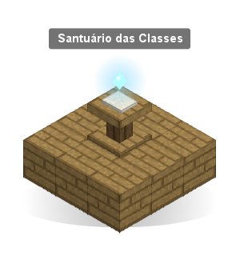
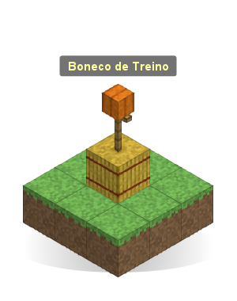
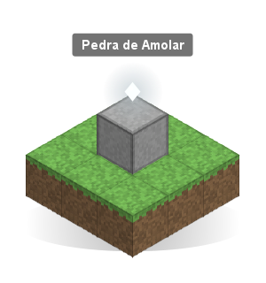
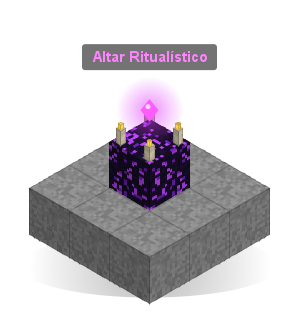
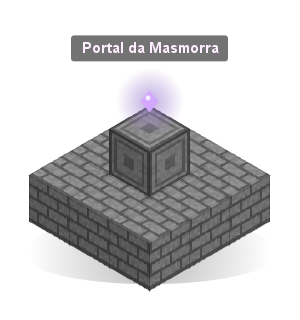
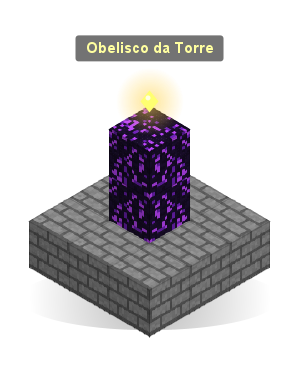
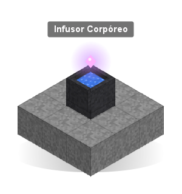
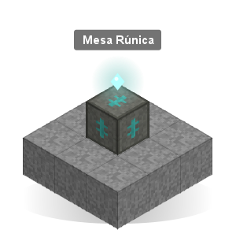
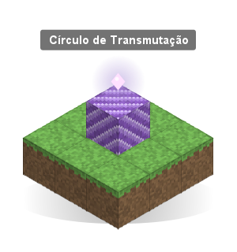
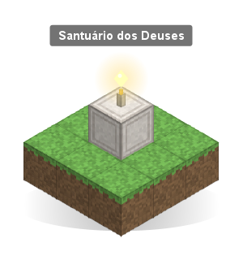
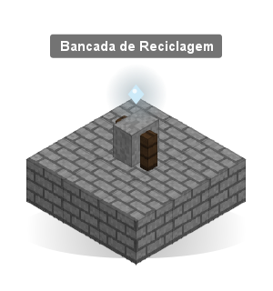
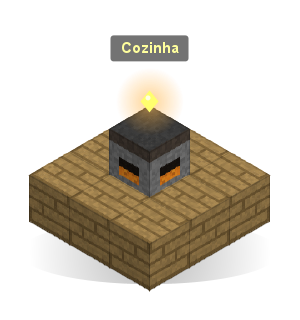
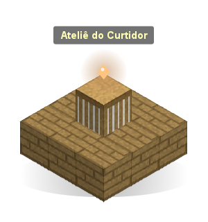
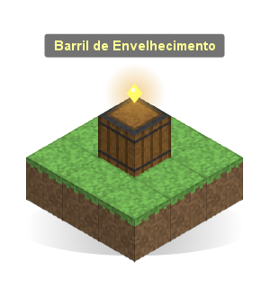
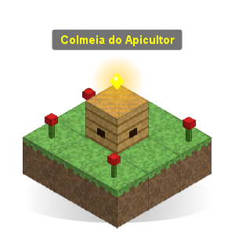
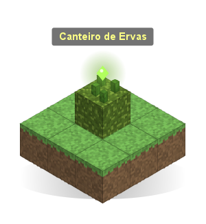
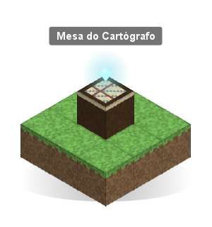
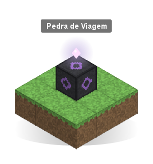
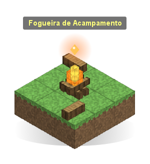
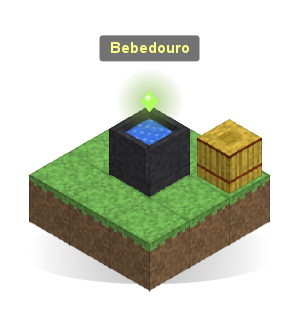
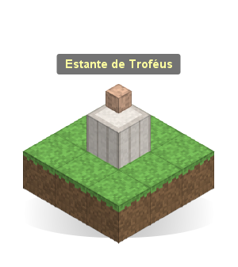
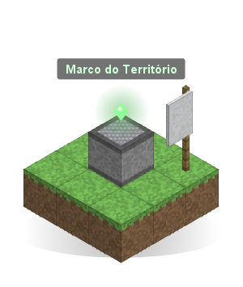
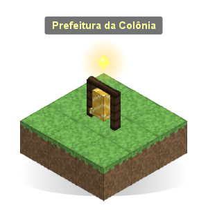
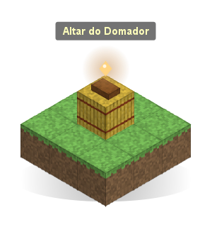
| Estação | Bloco | Itens jogados em cima | Para que serve |
|---|---|---|---|
| Forja do Ferreiro | Bigorna | 2 blocos de ferro + 1 balde de lava | Itens forjados com raridade, refino e Cajado Arcano |
| Infusor Corpóreo | Caldeirão com água | 1 mesa de encantamento + 1 bigorna | Infundir itens no corpo e pegar o grimório |
| Altar Ritualístico | Obsidiana chorona | 1 olho do ender + 4 velas | Invocar chefes e eventos |
| Cozinha | Defumador | 1 caldeirão + 1 balde de água | Pratos com buffs |
| Bancada de Reciclagem | Rebolo | 1 funil + 1 tesoura | Desmontar itens e recuperar material |
| Marco do Território | Magnetita | 1 estandarte + 4 esmeraldas | Proteger a sua área |
| Prefeitura | Sino (no seu território) | 1 bloco de esmeralda + 1 cama | Começar a sua colônia |
| Altar do Domador | Fardo de feno | 1 laço + 1 sela | Companheiros e componentes |
| Portal da Masmorra | Tijolos de pedra entalhados | 1 olho do ender + 1 bússola | Abrir masmorras e o Cofre das Almas |
| Santuário das Classes | Púlpito | 1 livro e pena + 1 diamante | Classes, provas e troca de classe |
| Pedra de Viagem | Pedra entalhada de ardósia | 2 pérolas do ender + 4 fragmentos de ametista | Teleporte entre pedras |
| Bancada Alquímica | Suporte de poções | 2 garrafas de vidro + 1 pó de blaze | Elixires, componentes, gemas, acessórios |
| Obelisco da Torre | Obsidiana chorona | 1 olho do ender + 1 bloco de ouro | Entrar na Torre Infinita |
| Santuário dos Deuses | Quartzo entalhado | 1 maçã dourada + 1 vela | Seguir um deus, oferendas, milagres |
| Círculo de Transmutação | Bloco de ametista | 1 Mercúrio Vivo + 1 lingote de ouro | Transformar materiais |
| Mesa Rúnica | Tufo entalhado | 4 fragmentos de ametista + 1 bloco de lápis | Gravar runas |
O Altar e o Obelisco usam a mesma obsidiana chorona: o que você jogar decide qual dos dois ela vira (e um bloco nunca vira os dois).
📈Atributos
13 atributos, do nível 0 ao 100. Chegar no 50 leva uns 20% do caminho; o 100 é para quem joga muito.
| Atributo | Como ganha XP | No nível 100 |
|---|---|---|
| ⛏ Mineração | Quebrar blocos de picareta (minério vale mais) | +100% velocidade de mineração, 50% de minério em dobro |
| ♣ Corte de Madeira | Quebrar troncos | +100% velocidade no tronco, 50% de tronco em dobro |
| » Corrida | Correr | +20% de velocidade |
| ⬆ Pulo e Queda | Pular e levar dano de queda | +30% pulo, +5 blocos de queda segura, −50% dano de queda |
| ⚔ Combate | Matar mobs, jogadores e chefes | +3 de dano, +5 corações |
| ⚒ Ferraria | Forjar, refinar, subir para netherite, fundir lingotes | Itens forjados mais raros e mais fortes |
| ✦ Arcano | Infundir, lançar magias, descobrir segredos | +150 de mana, mais carga, partes do corpo e magias |
| ≈ Natação | Nadar e andar debaixo d'água | +50% agilidade na água, +3 de fôlego, +60% mineração submersa |
| ☘ Agricultura | Colher plantações maduras e frutas | 50% de colheita dupla, mais qualidade, toque verde, colheita gigante |
| ♨ Culinária | Cozinhar na Cozinha | Libera receitas, pratos melhores, buffs +50% mais longos |
| ♞ Doma | Domar, cruzar, vincular companheiros, andar montado | 5 companheiros, 6 componentes, +100% vida e +50% dano deles |
| ⚓ Pesca | Pescar (raros, tesouros e criaturas valem mais) | Isca 50% mais rápida, 30% de peixe em dobro, 15% de peixe raro |
| ⚗ Alquimia | Criar na Bancada Alquímica, engastar, fazer poções | Elixires 60% mais longos, 40% de render o dobro |
O que não dá XP (anti-farm)
- Blocos colocados por jogadores e pedra de gerador.
- Pular parado no mesmo lugar; ser levado pela correnteza.
- Melancia e abóbora colocadas; plantação verde.
- Mobs de spawner dão só 25% do XP.
- Matar o mesmo jogador seguidas vezes, ou uma conta do mesmo IP.
Materiais raros
Fragmento de Forja, Pedra de Proteção, Essência Primordial, Mapa Rasgado, Página do Livro das Lendas e os núcleos dos chefes.
Eles não podem ser gastos em receitas comuns (bancada, bigorna, fornalha, poções), só nos sistemas do plugin.
⚔Combos de arma
Com uma arma na mão, 3 cliques seguidos soltam um golpe. D = clique direito, E = clique esquerdo. Você tem 0,9 s entre um clique e outro.
Como fazer
- Espada, machado, lança, tridente e maça começam com o direito:
D D D,D E D,D D E,D E E. - Arco e besta começam com o esquerdo:
E E E,E D E,E E D,E D D. - A barra de ação mostra o progresso (
D · E · ?). - Agachado não solta combo. Clicar em baú ou porta não conta, e um clique só ainda levanta o escudo.
- Golpes, habilidades de classe e magias acertam qualquer criatura (menos aldeões, NPCs, animais com nome e os bichos seus e dos aliados) e o Boneco de Treino.
- Jogadores: fora de território vale tudo, mesmo com o PvP do servidor desligado. Dentro de território vale a regra de PvP do dono (e a Lei da Paz do reino). Party (sem fogo amigo) e reino nunca se acertam.
Vigor e proficiência
- Cada golpe gasta vigor (barra amarela no topo) e tem uma recarga curta. O vigor volta sozinho, bem mais rápido fora de luta.
- Cada arma tem proficiência de 1 a 20: sobe acertando e derrotando inimigos com ela. Cada nível dá +2% de dano e libera golpes.
- /combos: escolha qual golpe fica em cada sequência (clique na sequência, depois no golpe).
- Classe, forja, refino, gemas e reações elementais também valem nos golpes.
| Arma | Golpes (nível de proficiência) |
|---|---|
| ⚔ Espada | Estocada (1), Corte Giratório (3), Lâmina Cruzada (5, sangra), Execução (8, x4 em quem está fraco), Tempestade de Lâminas (12), Passo Fantasma (16), Julgamento da Lâmina (20) |
| ✠ Machado | Salto Esmagador (1), Arremesso do Machado (3, volta), Rachar Escudo (5), Fúria do Lenhador (8), Redemoinho de Aço (12), Decapitar (16), Cisão da Terra (20) |
| ↟ Lança | Estocada Longa (1), Varredura (3), Arremesso da Lança (5), Salto do Dragão (8), Muralha de Lanças (12), Perfuração (16), Lança Celeste (20) |
| ♆ Tridente | Onda (1), Puxão (3), Redemoinho (5), Tridente do Trovão (8), Maré Alta (12, ajuda a party), Mergulho (16), Fúria de Poseidon (20) |
| ⚒ Maça | Abalo Sísmico (1), Martelo Ascendente (3), Atordoar (5), Quebra-Armadura (8), Salto Meteoro (12), Eco do Impacto (16), Martelo dos Deuses (20) |
| ➹ Arco e besta | Tiro Triplo (1), Flecha Perfurante (3), Salto Tático (5), Flecha Explosiva (8), Saraivada (12), Flecha Sombria (16, persegue), Tiro Celestial (20) |
Golpes de lenda
Cada uma das 12 lendas tem um golpe só dela, que aparece no /combos e vai em qualquer sequência. Lenda que é arma: na mão. Armadura ou picareta: basta estar com você.
Purificação Sagrada, Teia da Rainha, Queda da Floresta, Colapso do Abismo, Tempestade de Raios, Vazio do Fim, Égide, Passo do Andarilho, Sentença, Bigorna Celeste, Lâmina Arcana Suprema e Chamado da Alcateia.
Golpes de classe
Cada classe avançada tem um golpe para a arma dela (vale também na lendária que nasce dela).
Berserker: Fúria Sangrenta · Cavaleiro: Carga do Cavaleiro · Paladino: Martelo Sagrado · Atirador: Tiro na Cabeça · Caçador: Flechas da Matilha · Elementalista: Prisma Elemental · Feiticeiro: Lâmina Rúnica · Assassino: Mil Cortes · Mestre Forjador: Martelo Incandescente · Mestre das Feras: Investida da Fera.
Finalizador em cadeia
Acerte 3 golpes de combo diferentes em 10 s: o próximo combo (até 8 s depois) sai com +50% de dano e uma explosão em volta.
Posturas (/postura)
| Postura | Efeito |
|---|---|
| ▲ Ofensiva | +15% de dano e desequilibra mais; leva +10% de dano e gasta +10% de vigor |
| ■ Defensiva | -20% de dano recebido, resiste a empurrões e cada golpe cura ½ ❤; -10% de dano |
| ≈ Ágil | +10% de velocidade, recarga -20%, esquiva custa metade; -8% de dano |
| ✦ Mestra | A da arma na proficiência 20: Duelista, Carrasco, Falange, Maré, Colosso ou Atirador Paciente |
Com o pacote, espada, machado e maça mudam o jeito de segurar em cada postura.
Afinidade: sua classe e seu deus combinam com uma postura (veja no menu). Classe: +8% de dano e metade das penalidades. Deus: +1% de dano por nível de fé.
Óleos de lâmina
Feitos na Bancada Alquímica (aba Componentes), todos com 1 Óleo de Peixe. Segure e clique com o direito: o óleo vai na arma da outra mão (ou na 1ª arma da barra) e dura 60 golpes.
| Óleo | Receita (+ Óleo de Peixe) | Efeito |
|---|---|---|
| Fogo | pó de blaze, frasco | incendeia |
| Gélido | gelo compactado, 2 bolas de neve | lentidão e congela |
| Venenoso | 2 olhos de aranha, batata venenosa | veneno |
| Trovejante | Mercúrio Vivo, 2 lingotes de cobre | às vezes uma faísca salta para outro inimigo |
| Prata | 6 pepitas de ferro, pó de glowstone | +40% em mortos-vivos |
Ligações
- Combos × magia: com óleo ou runa na arma, os combos levam o elemento e fazem reações com as magias (suas ou da party). Óleo Gélido + magia de Fogo = Derreter.
- Ataque conjunto: dois da mesma party acertam combos no mesmo inimigo em até 3 s: dano extra, muito equilíbrio e estilo.
- Companheiros: no finalizador, eles atacam o alvo do combo.
Estilo, tempo certo e equilíbrio
- Tempo certo: depois do 2º clique, um "tim" marca o 3º. Acertou: golpe perfeito (+25% de dano, 30% menos vigor).
- Estilo D → S: varie os golpes e não apanhe. Mais rank = mais dano e XP.
- Equilíbrio: combos enchem a barra dos inimigos fortes; cheia, eles ficam parados 4 s e levam +50%.
- No ar: golpe em quem está no ar dá +30%.
≋Mobilidade e mochila
Esquiva
Dois toques rápidos em A, D ou S: salto rápido para o lado ou para trás, com um instante sem levar dano. Gasta 15 de vigor.
Gancho de Escalada
Lance num bloco e recolha: você é puxado até lá, sem dano de queda. Num monstro, ele vem até você; num chefe, você vai até ele.
Capa Planadora
Acessório de bolso (Bancada Alquímica: 4 membranas de phantom, 6 penas, 2 couros). No ar, aperte pular para planar. Pule de novo ou agache para soltar.
Mochila
/mochila: baú pessoal com 1 fileira no começo e +1 a cada 150 níveis somados, até 6. Não cai quando você morre.
⚒Forja, refino e reciclagem
Forja do Ferreiro
- Clique direito: bancada do ferreiro. Armas, ferramentas, armaduras, arcos, bestas, maças, lanças e escudos saem forjados.
- Agachado + clique: tela de refino.
- Na bancada comum os itens saem normais.
- /forja mostra suas chances de raridade.
Raridades
| Raridade | Bônus | Efeitos | Força | Ferraria 0 → 100 |
|---|---|---|---|---|
| ★ Comum | 1 | 0 | ×1,0 | 70% → 25% |
| ★★ Raro | 2 | 0 | ×1,3 | 24% → 35% |
| ★★★ Épico | 3 | 1 | ×1,7 | 5% → 22% |
| ★★★★ Único | 3 | 1 | ×2,1 | 1% → 11% |
| ★★★★★ Lendário | 4 | 2 | ×2,6 | 0% → 5% |
| ★★★★★★ Mítico | 5 | 3 | ×3,3 | 0% → 1,5% |
Bônus: dano, velocidade de ataque, alcance, armadura, vida, velocidade, pulo, mineração, crítico, roubo de vida, esquiva, espinhos... Efeitos (Épico+): passivos, ao acertar, ao apanhar e ao minerar. Raio e Execução são só dos Míticos.
Refino +1 a +10
Cada nível: +6% nos bônus da forja e +4% no dano/armadura base.
| Nível | Custo | Chance |
|---|---|---|
| +1 a +3 | lingotes de ferro e ouro | 100% → 95% |
| +4 a +6 | diamantes (+6 pede 1 Fragmento) | 85% → 65% |
| +7 a +9 | netherite e Fragmentos de Forja | 50% → 30% |
| +10 | 4 netherite, 8 Fragmentos, 1 Essência Primordial | 20% |
Até +5, falhar só gasta material. De +6 a +8 o item perde 1 nível. No +9 e +10 pode perder nível ou quebrar. A Pedra de Proteção evita as duas coisas.
Conjuntos e netherite
- As 4 peças de armadura forjadas dão bônus de conjunto (pela raridade mais baixa): de +1 de armadura (Comum) até +5 de armadura, +4 corações, +10% de velocidade, Regeneração e Resistência (Mítico).
- Subir um forjado para netherite mantém a raridade.
- Item achado no mundo vira forjado se for melhorado numa mesa de ferraria a até 6 blocos de uma Forja.
Bancada de Reciclagem
- Devolve 50% do material (até 75% com Ferraria alta). Netherite volta como diamante + sucata.
- Encantados: 25–50% de chance de livro com um dos encantos.
- Lendário/Mítico de diamante ou netherite: chance de Fragmento de Forja. Refino +5 ou mais devolve 1 Fragmento garantido.
- Gemas engastadas voltam inteiras.
✦Arcano e magias
Infusor Corpóreo
Escolha um item e uma parte do corpo: o item é consumido, gasta XP e pode falhar.
| Parte | Bônus por ponto | Arcano |
|---|---|---|
| Mente | +8 de mana máxima | 0 |
| Coração | +½ ❤ | 0 |
| Braços | +0,25 de dano | 20 |
| Pernas | +1,5% de velocidade | 40 |
| Sangue | +0,4 de mana/s | 70 |
Passar da carga do corpo causa rejeição. Ao morrer, as infusões ficam instáveis por 5 minutos.
Infusões lendárias (núcleos dos chefes)
| Núcleo | Poder |
|---|---|
| Núcleo de Ferro Ancestral | +4 armadura e resistência a empurrões |
| Presa da Rainha Aracnídea | Imune a veneno; envenena quem te ataca |
| Brasa Eterna | Imune a fogo; incendeia quem te ataca |
| Filactério do Lich | Imune a definhamento; rouba 8% do dano |
| Olho da Tempestade | Pulo duplo |
| Coroa do Arauto | +15% de dano e +4 corações |
Criar magias
Pegue o grimório no infusor (1 livro). Uma magia = 1 a 4 essências do seu corpo + uma forma + até 2 modificadores. Toda combinação funciona.
10 essências: Fogo, Gelo, Vento, Água, Vida, Terra, Sombra, Vazio, Energia, Natureza.
Formas: Toque, Projétil, Aura, Corpo, Criação, Raio (segure o clique), Sopro (cone), Chuva (área do céu), Invocação (um elemental luta por você) e Encantar arma.
Modificadores: Rápida, Ampliar, Dividir, Teleguiado, Canalizar, Ricochete, Persistente, Mina, Eco e Potente.
Reações elementais
Quem leva um elemento fica marcado por 6 s; um segundo elemento causa uma reação. Funciona entre jogadores: combos de party são muito fortes.
| Reação | Elementos | Efeito |
|---|---|---|
| Eletrocutado | Água + Energia | Choque salta para até 4 inimigos |
| Congelado | Água + Gelo | Alvo quase parado |
| Derreter | Fogo + Gelo | Muito dano |
| Incêndio | Fogo + Vento | O fogo se espalha |
| Queimada | Fogo + Natureza | Chamas que pulam para outros |
| Lama | Terra + Água | Lentidão forte |
| Corrupção | Sombra + Vida | Dano, definhamento e você se cura |
| Tempestade | Vento + Energia | Um raio cai no alvo |
| Colapso | Vazio + Sombra | Puxa os inimigos para o alvo |
| Estilhaçar | Gelo + Terra | Quebra o gelo: muito dano |
Maestria, estilo e cajado
- Maestria de cada elemento (1–10): +3% de força por nível; no 5 ganha uma variante (Chama Azul, Gelo Eterno...), no 10 as reações ficam 50% mais fortes.
- Estilo: marca visual nas suas magias (Estelar, Almas, Cristal, Cerejeira, Brasas, Eco, Melodia).
- Cajado Arcano: na Forja, 1 ametista na ponta + 2 varas de blaze na diagonal. Tem raridade, aceita refino e lança magias como o grimório. Gemas engastadas fortalecem elementos.
- Pergaminhos: escreva uma magia num papel na Bancada Alquímica; qualquer um lança uma vez, sem mana.
50 magias secretas
Combinações específicas viram magias com efeito único (Bola de Fogo, Nevasca, Meteoro, Fênix, Buraco Negro, Sopro do Dragão...). O grimório dá uma dica de cada.
As 5 proibidas (Chuva de Meteoros, Zero Absoluto, Julgamento, Ruptura Dimensional, Renascer da Floresta) só vêm de Tomos Proibidos: chefes do Altar, selos dos Locais Ocultos e masmorras Difícil/Pesadelo.
✂Curtume, tecelagem e sonhos
Ateliê do Curtidor
- Curtir: pele crua + farinha de osso = couro curtido (2 membranas de phantom = Couro Noturno).
- Tecer: 4 linhas = Tecido · 3 lãs = Feltro · 4 algas secas = Tecido de Alga.
- Costurar: Capuz 3+1, Gibão 5+2, Calças 4+2, Botas 2+1 (couros + tecidos).
- Peles: lobos, ursos polares, raposas, guardiões e hoglins (elites sempre deixam).
- Agachado + clique: o tear normal.
Conjuntos de armadura leve
| Conjunto | 2 peças | 4 peças |
|---|---|---|
| Caçador (lobo + linha) | +5% de velocidade | +10% com flechas e tridente; na Ágil, +8% de dano e esquiva mais barata |
| Urso Polar (urso + feltro) | +1 ❤ | -10% de dano recebido, resiste a empurrões |
| Raposa (raposa + linha) | Sorte | De noite: visão noturna e velocidade |
| Maré (escamas + alga) | Respira debaixo d'água | Graça do golfinho e +5% de peixe raro |
| Noite (noturno + linha) | -50% de dano de queda | Caindo do alto, desce devagar |
| Brasa (brasa + feltro) | -30% de dano de fogo | Sem calor; com pouca vida, Força |
Cada peça tem +1 de armadura e protege do frio. Jogue a peça + 1 Fragmento de Forja na Forja: ela ganha raridade e continua no conjunto.
Sonhos
Durma a noite inteira: às vezes você sonha com um lugar que ainda não conhece (estrutura, naufrágio, cidade submersa ou Local Oculto) e acorda sabendo para que lado fica.
Um sonho por dia, nunca o mesmo lugar. Ficam no /diario.
⚗Alquimia, gemas e acessórios
Bancada Alquímica
- Abas: Elixires, Componentes, Gemas, Acessórios, Engastar e Pergaminhos. Shift + clique cria até 8.
- Componentes: Pó Arcano, Óleo de Peixe, Tintura Vital, Sal Lunar, Mercúrio Vivo, Cristal de Mana, Solvente Alquímico. Pérola Negra e Escama do Abismo vêm da pesca.
- Elixires: Cura, Rapidez, Minerador, Mergulhador, Sorte, Pedra, Sombras, Mana, Gigante, Fênix, Titã e Purificação (cura maldições).
- /alquimia mostra todas as receitas.
Gemas
6 gemas em 3 graus (Bruta, Lapidada, Perfeita; 3 de um grau + material = 1 do próximo). Engaste em itens forjados: Comum 0 espaços, Raro/Épico 1, Único/Lendário 2, Mítico 3.
| Gema | Arma | Arco | Armadura | Ferramenta |
|---|---|---|---|---|
| Rubi | Dano | Dano de flecha | Vida | Vel. mineração |
| Safira | Crítico | Crítico | Armadura | Eficiência |
| Esmeralda | Roubo de vida | Roubo de vida | Esquiva | Sorte |
| Topázio | Vel. de ataque | Durabilidade | Velocidade | Durabilidade |
| Ametista | Alcance | Dano de flecha | Resistência | Alcance |
| Ônix | Repulsão | Durabilidade | Reflete dano | — |
Tirar uma gema gasta 1 Solvente Alquímico e devolve a gema.
Acessórios (/acessorios)
2 anéis, 1 amuleto, 1 cinto e 2 bolsos. Não ocupam a armadura e não caem ao morrer.
| Tipo | Opções |
|---|---|
| Anéis | Vigor, Força, Vento, Marés, Brasas, Minerador, Fortuna, Sábio |
| Amuletos | Mana, Guardião, Vida, Fênix (escapa da morte a cada 10 min) |
| Cintos | Atleta, Andarilho, Titã |
| Bolso | Lanterna de Bolso, Ímã, Relógio, Capa Planadora |
👕Guarda-roupa, títulos e missões
Guarda-roupa
/guardaroupa: escolha uma peça para ser a aparência de cada parte, sem perder a proteção da armadura de verdade. Na cabeça vale qualquer item, e dá para esconder peças.
/cosmeticos, /chapeu e /tag: item na cabeça e tag personalizada.
Títulos
/titulos: 92 títulos com requisitos (em páginas), como Andarilho das Ruínas, Coletor da Estação e Irmãos de Armas. Só o título em uso dá bônus (vida, dano, mana, XP...). Ele aparece acima da sua cabeça e os mais difíceis são anunciados.
Missões dos aldeões
Agache + clique direito num aldeão com profissão: 3 pedidos do dia. Cumprir dá esmeraldas, XP, às vezes Fragmentos, e reputação (desconto no comércio). Até 3 ao mesmo tempo; /missoes.
☘Fazenda e cozinha
Plantações
- Colheita com qualidade: Normal, Boa ★, Ótima ★★, Perfeita ★★★.
- Colheita dupla, toque verde (plantas perto crescem) e colheita gigante (×8).
- Adubo Rico (3 farinhas de osso + 1 carne podre + 1 terra = 4): a próxima colheita sai uma qualidade acima.
- Espantalho: suporte de armadura com abóbora na cabeça impede pisotear a terra a até 10 blocos.
Sementes raras
Duas plantações diferentes maduras lado a lado: 3% de nascer uma semente mutante.
| Cruzamento | Variedade |
|---|---|
| Trigo + Cenoura | Trigo Dourado |
| Cenoura + Batata | Cenoura Cristalina |
| Batata + Beterraba | Batata Ancestral |
| Beterraba + Trigo | Beterraba Rubi |
Cozinha
Clique para o menu de receitas; agachado abre o defumador normal. /receitas mostra o livro. Ingredientes de qualidade sobem a qualidade do prato (e a duração).
| Prato | Culinária | Efeito |
|---|---|---|
| Pão Caseiro | 0 | Pressa |
| Ensopado de Legumes | 0 | Regeneração |
| Sopa do Pescador | 10 | Respiração aquática e Sorte |
| Torta de Abóbora da Vovó | 10 | Sorte e Velocidade |
| Salmão com Ervas | 15 | Respiração aquática e Graça do golfinho |
| Batata Recheada | 20 | Absorção e Resistência |
| Biscoito de Mel | 25 | Pressa II |
| Ensopado do Caçador | 30 | Força |
| Salada Arcana | 40 | Visão noturna e +60 de mana |
| Sushi Real | 45 | Golfinho, Conduíte e Pressa (Salmão-Rei) |
| Banquete do Guerreiro | 50 | Força, Resistência, Regeneração (Trigo Dourado) |
| Pão Dourado | 60 | Absorção II e saciedade cheia |
| Sopa Cristalina | 70 | Resistência ao fogo e Velocidade II |
| Caldeirada Abissal | 75 | Resistência, Visão noturna e Força |
| Torta Rubi | 80 | Vida extra II e Regeneração II |
| Banquete Lendário | 90 | Força, Resistência, Regeneração e Velocidade para todos a 10 blocos |
| Caldo Quente do Pescador | 15 | Resistência ao fogo (protege do frio) e Regeneração (Truta-do-Gelo) |
| Sorvete de Cristal | 50 | Velocidade II e Pressa II (Enguia de Cristal) |
| Caviar Ancestral | 80 | Força, Resistência, Vida extra II e Sorte (Esturjão Ancestral) |
✧Fé e mistério
Deuses
- No Santuário, escolha um dos 6 deuses (um por vez) e jogue oferendas com Q em cima dele.
- Reze 1 vez por dia; o XP dos atributos do deus também dá devoção.
- Fé 1 a 5 fortalece o passivo. Na fé 2 libera o milagre (a cada 20 min): /deus milagre.
- O Rei pode tornar o deus dele o deus oficial do reino (+25% de devoção para quem segue).
| Deus | Passivo | Milagre |
|---|---|---|
| ⚒ Ferrum (Forja) | Armadura e mineração | Conserta o equipamento |
| ☘ Sylva (Natureza) | Vida e cura lenta | Plantações amadurecem, cura a party |
| ≈ Maris (Mar) | Fôlego e nado | Chuva e Poder do conduíte |
| ⚔ Bellum (Guerra) | Dano | Força II para a party |
| ✦ Arcanus (Magia) | Mana | Mana cheia e +5/s |
| ☠ Mortis (Morte) | Roubo de vida | Evita a próxima morte |
Astronomia
À noite, com céu aberto, olhe para cima pela luneta por 5 s. Cada noite tem uma das 12 constelações, que entra no seu diário e dá uma bênção até o amanhecer (XP extra, Sorte, Visão noturna, Força, Regeneração, devoção em dobro...). /estrelas
Transmutação
Cobre em ferro, ferro em ouro, lápis em esmeralda, ouro em diamante, diamante em netherite... Pode falhar (e às vezes explode). A Pedra Filosofal no inventário dá +20% de chance.
Runas
Na Mesa Rúnica, grave uma runa por peça: Salto (pulo duplo), Proteção, Visão, Ímpeto, Explosão, Gelo, Tempestade, Vampírica, Fusão (minério já fundido) e Eco (flecha dupla).
🗺Exploração e campanha
Enciclopédia do Mundo
Cada bioma em que você pisa, cada estrutura em que entra e cada item que pega pela primeira vez entram sozinhos na enciclopédia, junto com as relíquias. Cada bioma novo dá +0,2% de XP em tudo (até +15%). /enciclopedia
Mitrilo
- Minério raro no fundo do mundo (Y -58 a -24), no lugar de ardósia profunda e tufo. Brilha de leve.
- Só quebra com picareta de diamante ou netherita, devagar. Dá Mitrilo Bruto e muito XP de Mineração.
- Bruto no forno vira Lingote de Mitrilo.
A peça vira ✦ Mitrilo: 50% mais durabilidade, e arma +1,5 de dano, armadura +1 de armadura e resistência, ferramenta +20% de velocidade.
Mapas do Tesouro
- Mapas de verdade com um X vermelho. Caem de elites, da pesca, de baús de chefes e masmorras, de sítios de arqueologia e do Cronista.
- Três tipos: comum, raro e lendário (este traz mitrilo).
- Chegue a 14 blocos do X com o mapa: o baú é desenterrado e guardiões saem da terra.
Arqueologia e relíquias
Procure pedras em pé com areia e cascalho suspeitos em volta. Use o pincel: saem cacos e uma das 12 relíquias (Moeda do Rei Caído, Máscara de Mortis, Coração de Sombra...). Cada uma tem sua história e entra na coleção.
Estruturas pelo mundo
Em terra nunca visitada surgem, de vez em quando, dezesseis tipos de estruturas prontas. Ao chegar perto, o nome aparece na tela e ela entra no Diário. Descubra 12 para o título Andarilho das Ruínas.
| Estrutura | O que tem |
|---|---|
| 🗼 Torre de Vigia Abandonada | Três andares, sino e baú no alto. Sentinelas Esquecidas acordam quando você chega |
| ⛺ Acampamento de Bandidos | Fogueira, tendas e saque. Bandidos e o Chefe dos Bandidos (esmeraldas e às vezes mapa) |
| ⚰ Cemitério Antigo | Lápides e um mausoléu com cripta embaixo (página de lenda, relíquia). À noite os mortos se levantam |
| ⛏ Mina Abandonada | Poço com escada até túneis com trilhos, minérios e o carrinho de minério (às vezes Mitrilo). Mineiros Perdidos e aranhas |
| ⛲ Poço dos Desejos | Jogue 1 esmeralda na água: um desejo por dia (Sorte, Vigor, Ligeireza, Pressa, Herói da Vila, Fôlego ou Visão) |
| 🛖 Cabana do Eremita | O Eremita troca ervas, mudas, elixires, mapas e cartas (ofertas novas todo dia) e conta boatos de estruturas que você ainda não viu |
| ✧ Santuário Esquecido | Altar de um dos seis deuses. Se você segue esse deus, clique no altar uma vez por dia: +30 devoção e uma bênção |
| 🌴 Oásis do Deserto | Lagoa com palmeiras, um camelo e o Mercador Nômade (gemas, bebidas, elixires, mudas de limoeiro, mapas) |
| 🧙 Cabana da Bruxa | No pântano, sobre palafitas. A Bruxa vende elixires, componentes, frascos e ervas de dia; à noite não atende e as aprendizes dela saem |
| 🗼 Farol Abandonado | Na praia. Suba e clique na lanterna com um bloco de pedra luminosa: por 7 dias quem navega perto tem Sorte (pesca e saque melhores) |
| ❄ Expedição Perdida | Na neve: o diário da expedição e o trenó com o mapa que eles seguiam. Exploradores Congelados guardam o lugar |
| 🏚 Vila Saqueada | Casas queimadas e o diário de um sobrevivente (conta de onde vieram os bandidos). Os Aldeões Perdidos podem ser curados |
| 🔮 Torre do Mago em Ruínas | As anotações do mago revelam uma magia secreta. No alto, o Aprendiz Corrompido guarda o baú |
| ◯ Círculo de Pedras Antigas | De noite as pedras brilham. Na lua cheia, entre no círculo: o Guardião Ancestral desperta e deixa uma relíquia |
| ⚒ Forja dos Anões | Salão meio enterrado com lava e bigorna: Fragmentos de Forja e às vezes Mitrilo. Anões Espectrais lá dentro |
| 🏰 Fortim em Ruínas | Muralha, torres e a torre de menagem. Soldados e o Capitão Esquecido. Bom para party |
| ⚓ Naufrágio | No fundo do mar. Navio com nome (mercante, pirata, real ou de expedição), carga própria e o diário do capitão, que às vezes aponta para uma cidade submersa |
| 🔱 Cidade Submersa | Rara, no mar profundo. Templo de Maris, casas, arquivo com a história, cofre e guardas afogados |
O coração da cidade submersa
Entre no santuário do templo e o Sumo-Sacerdote acorda. Derrotado, ele deixa o Coração da cidade (um condutor). Ponha bem no meio da moldura do altar: a cidade desperta, os guardas somem e quem segue Maris ganha +80 de devoção. Ou fique com o condutor: o sacerdote volta em 7 dias.
Leve poção de respiração ou um capacete com Respiração Aquática.
As Crônicas do Mundo
O Cronista (um bibliotecário no spawn) conta a campanha em 8 capítulos. Clique nele ou use /cronista para ler o pedido; ao cumprir, volte até ele e clique em entregar.
| Capítulo | Pedido | Recompensa |
|---|---|---|
| 1. O Aventureiro | Nível total 50 | 16 esmeraldas e mapa comum |
| 2. O Fogo da Forja | Forjar 5 itens | 4 Fragmentos de Forja |
| 3. Ecos Arcanos | Lançar 100 magias | Pó Arcano e Cristais de Mana |
| 4. Os Deuses Esquecidos | Fé 2 com um deus | Relíquia e 10 esmeraldas |
| 5. Sob a Terra | Vencer 3 masmorras | Pedra de Proteção |
| 6. O Céu Fala | Observar 4 constelações | Mapa raro |
| 7. As Ruínas Contam | 6 relíquias diferentes | Essência Primordial |
| 8. O Selo | Romper o selo de um Local Oculto | 2 lingotes de mitrilo e mapa lendário |
★Talentos, renascer e companheiros
Talentos
1 ponto a cada 25 níveis somados nos atributos (até 52), mais 8 a cada renascimento. Cada árvore tem 4 faixas: a 2ª abre com 5 pontos gastos nela, a 3ª com 10 e o talento final com 15. Refazer custa 16 esmeraldas. /talentos
| Árvore | Talentos | Final |
|---|---|---|
| ⚔ Guerreiro | Força Bruta, Pele Grossa, Vigor de Batalha, Sede de Sangue, Golpe Crítico, Inabalável | Fúria Imortal: com pouca vida, +25% de dano e Regeneração II |
| ✦ Arcano | Mente Ampla, Fluxo, Economia Arcana, Eco de Mana, Escudo de Mana, Erudito | Sobrecarga: a cada 30 s, uma magia de graça |
| ⚒ Artesão | Mãos de Ferreiro, Colheita Farta, Refinador, Alquimista Nato, Mestre-Cuca, Engenhoso | Obra-Prima: forja com chance de subir duas raridades |
| ➶ Explorador | Passos Leves, Sorte do Viajante, Queda Suave, Esquiva Ágil, Caçador de Tesouros, Garimpeiro | Andarilho Eterno: fora de combate, Velocidade I e Pressa I |
Renascer
Com todos os atributos no nível 100, os atributos voltam a 0 e os talentos são devolvidos. Para sempre, a cada vez:
- +10% de XP, +1 ❤, +2% de dano corpo a corpo e +10 de mana;
- +8 pontos de talento e uma ★ antes do nome (até 5).
Itens, classes, lendas, companheiros e títulos ficam. Mochila, território, masmorras e classes contam como nível máximo. /renascer
Evolução dos companheiros
- Ganham XP lutando (Elites e chefes valem mais), sendo montados e perto de você. Nível 1 a 30, +2% de vida e dano por nível.
- Nível 10, estágio II: maiores, se regeneram e ganham o Golpe Feroz.
- Nível 25, estágio III: ainda maiores e com o Vínculo Ancestral (perto dele você recebe 8% menos dano).
- Lobo → Lobo Alfa → Lobo das Sombras; Cavalo → Corcel de Guerra → Corcel Celeste; Golem → Colosso de Ferro. Veja no /pets.
♨Detalhes do dia a dia
Mais coisas na Forja
- Barco: isca mais rápida pescando nele e menos dano para quem vai dentro.
- Carrinho de mina: mais rápido nos trilhos.
- Vara de pescar: isca mais rápida e mais peixe raro.
- Élitro: mais impulso dos fogos.
- Armadura de cavalo: velocidade, pulo e vida para a montaria.
- Reforjar: item achado no mundo + 1 Fragmento de Forja jogados na Forja.
- Ferradura (5 ferros em U): +15% de velocidade num companheiro, sem gastar componente.
Mundo
- Túmulo: ao morrer, seus itens ficam na sua cabeça onde você caiu, protegidos por 15 min. Uma bússola aponta para ele.
- Sentar: clique com a mão vazia numa escada ou laje, ou /sentar.
- Ninhos: caem das folhas; clique para abrir.
- Animais raros: "de Ouro" e "de Neve" (1 em 500), com drops em dobro.
- Achados na areia e no cascalho; orvalho no amanhecer dá +50% de XP de Agricultura.
Estações pequenas
| Estação | Ritual (Q) | O que faz |
|---|---|---|
| 🎯 Boneco de Treino | Fardo de feno + abóbora esculpida + suporte de armadura | Mostra o dano de cada golpe e por segundo; nunca quebra |
| ⚔ Pedra de Amolar | Rebolo ou pedra lisa + 2 pederneiras + 1 ferro | Arma +10% de dano por 100 golpes (custa 1 pederneira) |
| ♨ Fogueira de Acampamento | Fogueira acesa + 1 lã + 1 tronco | Sentado perto: Regeneração e Descansado (+5% de XP por 20 min); assa comida jogada do lado |
| ☘ Bebedouro | Caldeirão com água + 1 fardo de feno | Filhotes crescem mais rápido; companheiros se curam |
| 🏆 Estante de Troféus | Pilar de quartzo + núcleo de um chefe | Mostra o troféu; +1% de XP por troféu diferente no seu território |
| 🧭 Mesa do Cartógrafo | Mesa de cartografia + bússola + 3 papéis | Com um mapa do tesouro: direção e distância do X |
Recordes e Diário
/recordes: maior golpe, maior nível e os maiores números do servidor; quem bate um recorde é anunciado. Escreva [recordes] numa placa para ela virar um painel. /diario: o Diário de Viagem com os marcos da sua jornada, cada um com a data.
🛢Vida no mundo
Ofícios
| Estação | Ritual (Q) | O que faz |
|---|---|---|
| 🛢 Barril de Envelhecimento | Barril vazio + 2 ferros + 1 favo | Bebidas que melhoram com os dias reais: Nova, Envelhecida (1 dia), Reserva (3) e Lendária (7). Licor de Frutas: 6 frutas do pomar + 1 garrafa de mel |
| 🐝 Colmeia do Apicultor | Colmeia + 1 favo + 1 flor | Méis Dourado, Gelado, Floral, Noturno ou Silvestre, cada um com um efeito |
| ☘ Canteiro de Ervas | Musgo + farinha de osso + vaso | Ervas que dependem do lugar (Sálvia, Erva-de-Sol, Musgo Lunar, Folha Gélida, Raiz Abissal, Flor-de-Cristal) |
| 🍊 Pomar | Plante uma muda especial | Laranja, pêssego, cereja, limão e maçã dourada penduram nas folhas na estação certa: clique para colher |
Álbum de Cartas
Monstros, chefes e peixes raros às vezes deixam uma carta (algumas são brilhantes). Clique com ela na mão para guardar. 54 cartas em 8 páginas; cada página completa dá +5% de dano naquele grupo. 5 repetidas trocam por uma que falta. /album
Pelo mundo
- Mercador Itinerante: aparece por 20 min com ofertas raras; o servidor avisa onde.
- Encontros: carroça tombada, bandidos com saque, viajante ferido (dê comida) e estrela cadente.
- Segredos: 12 conquistas escondidas. /segredos
Flechas e frascos (bancada)
Flechas: 4 flechas + pó de blaze (fogo), gelo compactado (gelo), pérola do ender (rastreadora) ou TNT (explosiva); 2 flechas + laço (corda: puxa você até onde cravar).
Frascos: garrafa + pólvora + Musgo Lunar (fumaça), 2 slimes (cola), pólvora + Erva-de-Sol (fogo-grego) ou melancia reluzente + Sálvia (cura em área). Clique para arremessar.
Conforto
/rpg abre o menu central (próximo passo, categorias, atalhos e Jornada). Com o pacote de recursos, os menus têm fundo desenhado. /placar liga o placar lateral (nível, vigor, mana, estação, lua, hora e talentos).
⚓Pesca
O que dá para fisgar
- Peixes com qualidade ★ a ★★★ (melhoram pratos e elixires).
- Tesouros do Mar: esmeraldas, ouro, diamantes, livros, Pérolas Negras, às vezes Mapa Rasgado ou Fragmento.
- Criaturas marinhas que lutam: Afogado Faminto, Guardião das Ondas, Capitão Afogado e o Senhor das Marés.
- /peixes: Diário do Pescador com onde achar cada raro.
12 peixes raros
| Peixe | Onde / quando | Pesca |
|---|---|---|
| Carpa Dourada | Rios e lagos, longe do mar | 0 |
| Truta Arco-Íris | Rios, de dia | 0 |
| Peixe-Lua | Qualquer água, de noite | 5 |
| Peixe-Pedra | Cavernas (abaixo da altura 45) | 10 |
| Enguia Elétrica | Debaixo de chuva | 15 |
| Peixe-Gelo | Biomas de neve | 20 |
| Koi Celeste | Cerejeiras e campos de flores | 25 |
| Baiacu-Rei | Oceanos mornos ou quentes | 30 |
| Salmão-Rei | Rios e oceanos frios | 35 |
| Peixe-Fantasma | Pântanos e manguezais, de noite | 45 |
| Peixe Abissal | Oceanos profundos, de noite | 60 |
| Peixe-Dragão | Oceano em tempestade (anunciado) | 85 |
Pesca no gelo
Quebre o gelo de um lago gelado (ou de qualquer lago no inverno) e pesque no buraco: +5% de peixe raro e 5 peixes só de lá.
| Peixe do gelo | Quando | Pesca |
|---|---|---|
| Truta-do-Gelo | De dia | 10 |
| Lúcio Polar | Qualquer hora | 25 |
| Peixe-Lanterna Glacial | De noite | 35 |
| Enguia de Cristal | Durante uma nevasca | 50 |
| Esturjão Ancestral | De noite, no inverno (anunciado) | 80 |
Cabana de Pesca: a até 12 blocos, isca 30% mais rápida, +4% de raro e ninguém sente frio.
♞Domador e companheiros
Altar do Domador
- Vincular: traga um animal no laço (ou um pet seu) e clique nele no menu.
- Invocar: entregue os itens da criatura e ela nasce sua (20 criaturas: lobo, cavalo, golem de ferro, vaca de cogumelo...).
- 1 companheiro no começo, até 5 com Doma alta. /pets lista todos.
Ordens
| Ordem | O que faz | Doma |
|---|---|---|
| Seguir | Anda atrás de você e defende | 0 |
| Ficar | Fica parado | 0 |
| Guardar | Ataca monstros que chegam perto | 15 |
| Patrulhar | Anda pela área atacando monstros | 25 |
| Solto | Animal comum | 0 |
Clique no companheiro com a mão vazia. Nenhuma ordem teleporta: ele sempre vai andando.
Componentes (até 6 por companheiro)
| Componente | Item | Doma | Efeito |
|---|---|---|---|
| Sela do Domador | sela | 0 | Monta e guia com WASD |
| Agilidade | açúcar | 5 | +30% de velocidade |
| Alforje | baú | 10 | Carrega 27 itens |
| Farol | pedra luminosa | 10 | Brilha e dá Visão Noturna |
| Couraça | peitoral de ferro | 15 | +8 armadura e +25% vida |
| Garras | espada de ferro | 20 | Luta (até uma vaca!) e bate +50% |
| Coletor | funil | 25 | Pega itens do chão para o Alforje |
| Coração do Mar | coração do mar | 30 | Não se afoga; quem monta respira |
| Chamas | vara de blaze | 35 | Imune a fogo; ataques incendeiam |
| Segunda Vida | totem | 40 | Escapa da morte uma vez |
| Asas | élitro | 50 | Voa montado (pede Sela) |
| Pele de Netherite | lingote de netherite | 60 | +6 armadura, imune a fogo |
Ideia: vaca de cogumelo + Sela + Asas = montaria voadora.
👥Party e territórios
Party (até 6)
- /party convidar <nick> — o convite chega com botões.
- Sem fogo amigo (nem flecha, poção, pet ou magia).
- Quem está a até 32 blocos ganha 50% do XP de Combate; quem matou ganha +10% por membro perto.
- /pc <mensagem> — chat da party. Aviso quando alguém fica com pouca vida.
Território
- Protege 3×3 chunks; +1 chunk a cada 20 níveis somados (até 60).
- Expansão: o mesmo ritual numa magnetita longe, com +1 bloco de esmeralda, cria outra área do seu território (+9 chunks). 1 a cada 300 níveis somados, até 2.
- Menu (/territorio): mapa de chunks, membros, regras (PvP, portas, baús, monstros, explosões, fogo, reino, party), expansões e bordas.
- Ninguém de fora quebra, coloca, abre baú, mexe em animais, estações etc.
🐄Vida no campo
Criação de animais
- Agachado + clique com a mão vazia num animal da fazenda: ele vira seu e mostra os corações. /animais lista todos.
- Todo dia: carinho (mão vazia) e comida (na mão, pasto na grama ou um fardo de feno perto).
- Mais corações = produtos melhores: ovos, leite (balde), lã, trufas do porco, pele de coelho.
- No inverno, deixe num celeiro com teto. Filhotes nascem já seus (gêmeos na primavera).
Tacho do Artesão
- Clique com o ingrediente na mão: leite → queijo, fruta → geleia, legume → conserva, ovo → maionese, trufa → óleo.
- Guarda a qualidade do ingrediente. Clique de novo quando estiver pronto.
Plantações da estação
- 20 plantas, 5 por estação; o milho cresce no verão e no outono e a cebola no inverno e na primavera.
- Estufa: com teto de vidro, cresce o ano todo. Fora de época, a planta murcha na troca de estação.
- Couve-flor, melão e abóbora-moranga em 3×3 maduras podem virar uma gigante.
- 13 pratos novos com tudo isso (pizza da roça, ratatouille, risoto de trufa, Banquete da Fazenda...).
🏘Colônia e exército
Começar
- Precisa ser no seu território. Vira a Prefeitura e chegam 2 moradores. /colonia abre de qualquer lugar.
- Defina até 4 baús de depósito perto da Prefeitura: os moradores guardam ali o que produzem e pegam comida.
- Comida e felicidade mudam a produção (×0,5 a ×1,2). Pratos da Cozinha deixam todos felizes.
- A colônia é o território inteiro (com as expansões): camas, plantações, postos, água e pomar contam em qualquer chunk dele. Cada morador precisa do seu próprio posto.
Profissões
| Profissão | Posto | Nível |
|---|---|---|
| Fazendeiro | Composteira (na Fazenda) | 1 |
| Lenhador | Bancada de flechas | 1 |
| Pescador | Barril (com água perto) | 1 |
| Minerador | Cortador de pedras | 2 |
| Cozinheiro | Cozinha | 2 |
| Soldado | Alvo num Quartel | 2 |
| Ferreiro | Forja do Ferreiro | 3 |
| Tratador | Altar do Domador | 3 |
| Arqueiro | Alvo num Quartel | 3 |
| Alquimista | Bancada Alquímica | 4 |
Cada nível da colônia (pago com o depósito) libera +3 moradores, até 15. O nível 5 dá +20% de produção.
Construções
- O lado em que você está vira a entrada. Aparece uma cerca em volta do canteiro, com um portão.
- Agachado + clique na cerca: girar, mudar de lugar, ver o contorno e os materiais, trazer do depósito.
- Ponha um baú dentro da cerca (fora da obra): o Construtor livre vem, limpa o terreno e ergue tudo bloco a bloco.
- Projetos: Casa, Fazenda, Poço da Praça, Torre de Vigia (aumenta o território 3×3 chunks em volta dela), Armazém, Biblioteca e Quartel.
- Do seu jeito (botão direito no projeto): você constrói na área cercada e pede a vistoria. Precisa ter o mínimo do nível 1 (blocos, camas, portas, luz, teto...).
- Cada construção pronta tem uma placa: clique abre o menu dela; quebrar (2 vezes) desfaz a construção.
- Cada profissão tem a sua construção (Oficina do Construtor, Fazenda, Cabana do Lenhador, Cabana do Pescador, Mina, Mercado, Taverna, Biblioteca, Quartel, Ferraria, Estábulo, Laboratório): o posto só vale dentro dela, e cada nível dá +10% de produção.
- Cada morador mora numa Casa e dorme na cama dela. Sem casa ele fica triste e produz menos; morador novo só chega se houver vaga nas casas.
- Toda construção tem 3 níveis: melhore e peça a vistoria de novo em Obras. Torre vigia mais longe, Fazenda e Biblioteca dão +10% por nível, a Praça deixa todos mais felizes.
Exército
- Soldados e arqueiros vestem o uniforme na cor do reino, não queimam no sol e os aldeões não têm medo deles.
- Cada Quartel (bloco de alvo) abriga 4 soldados.
- Ordens: guardar a colônia, seguir você ou atacar o Marco inimigo (na guerra).
- Shift + clique no Exército equipa todos com o melhor do depósito.
👑Reinos e guerra
Fundar e cargos
/reino fundar <nome> — colônia nível 2 e 32 esmeraldas.
- Rei (guerra, paz, cargos, coroa), Nobre (tesouro, expulsar), Cavaleiro (convida) e Cidadão.
- Tesouro de esmeraldas: todos depositam, Rei e Nobres sacam.
- Membros do mesmo reino não se machucam.
Províncias e leis
- O território de cada membro é uma província do reino: o nome do reino aparece ao entrar e no mapa (/reino mapa).
- Com a regra "Reino pode construir" (ligada por padrão), membros do reino constroem nas províncias uns dos outros.
- Leis (só o Rei, no menu ou /reino lei): Lei da Paz (sem PvP), contra Explosões, contra Incêndios e das Muralhas (sem monstros). Valem em todas as províncias.
Guerra com horário marcado
- O Rei declara (/reino guerra <reino>); a batalha acontece no horário de guerra do servidor (padrão: sábado 20h, por 60 min, com 24h de aviso).
- PvP livre entre os dois reinos.
- Capturar Marco: fique a até 6 blocos do Marco inimigo por 2 min sem defensores perto. O território perde 4 chunks.
- Pontos: Marco 10, jogador 2, soldado 1. O vencedor leva 30% do tesouro do outro.
- Construções nunca são destruídas. Depois: 7 dias de trégua.
☠Altar Ritualístico e chefes
Clique para ver o que ele invoca; jogue a oferenda em cima ou entregue pelo menu.
| Invocação | Oferenda | O que é |
|---|---|---|
| Golem Ancestral ★ | 4 blocos de ferro + 1 abóbora esculpida | Tremor, arremesso, escudo de ferro |
| Rainha Aracnídea ★ | 8 olhos de aranha + 16 linhas | Filhotes, teias, veneno, saltos |
| Senhor das Chamas ★★ | 8 varas de blaze + 4 cremes de magma | Bolas de fogo, anel de fogo, meteoros |
| Lich ★★ | 1 crânio de esqueleto + 32 ossos | Invoca mortos, raio sombrio, teleporte |
| Tempestade Viva ★★★ | 4 varas de breeze + 8 cargas de vento | Rajadas, raios, ciclone |
| Arauto do Fim ★★★★ | 1 estrela do Nether + 4 fragmentos de eco + 1 bafo de dragão | Golpe do vazio, vexes, onda sônica |
| Lua de Sangue | 1 rosa do wither + 16 carnes podres (à noite) | Monstros fortes, dobro de XP e drops |
| Chuva de Meteoros | 8 cargas de fogo + 1 diamante | 90 s de meteoros com minérios |
| Ondas de Monstros | 8 carnes podres, 8 ossos, 8 linhas, 8 pólvoras | 5 ondas + Campeão |
| Mercador Arcano | 24 esmeraldas + 1 olho do ender | 10 min de trocas raras |
| Caçador de Recompensas | 16 esmeraldas + 1 espada de ferro | Contratos para matar chefes |
Chefes: vida maior com mais jogadores, fúria abaixo de 30%, presos perto do altar. Deixam o núcleo, Fragmentos, chance de Pedra de Proteção, Essência Primordial e Tomo Proibido.
۞Masmorras
Portal da Masmorra
Clique, escolha a dificuldade e pague. Ela se forma em segundos e o portal abre por 30 s: suba nele com a sua party.
- Salas de combate trancam e soltam ondas. Salas de tesouro têm baús e forjados.
- O chefe fica na sala mais longe. Vencer dá o baú do chefe e um portal de saída.
- 40 min de limite. /masmorra sair sai sem perder nada.
Morreu lá dentro? Os itens vão para o Cofre das Almas: clique num Portal da Masmorra e pague 2 diamantes por morte.
Dificuldades
| Dificuldade | Chefe | Nível total | Custo | Tesouro |
|---|---|---|---|---|
| Fácil | Golem ou Rainha | 0 | 8 esmeraldas | Raro a Épico |
| Normal | Chamas ou Lich | 110 | 2 diamantes | Épico a Único |
| Difícil | Tempestade Viva | 330 | 6 diamantes | Único a Lendário |
| Pesadelo | Arauto do Fim | 550 | 1 netherite | Lendário a Mítico |
Temas sorteados: Cripta, Caverna Profunda, Fornalha Infernal ou Palácio Gelado. Pérola do ender não funciona lá dentro.
⛩Portais pelo mundo
Como funcionam
- De vez em quando um portal se abre perto de alguém que está explorando, e o servidor recebe as coordenadas. /portais lista todos.
- Cada um tem uma dificuldade (Fácil, Normal, Difícil ou o raro Pesadelo) e uma placa com o tempo que falta.
- Entrar: ande para dentro do anel. Na primeira vez ele desperta; entre de novo em alguns segundos. Qualquer um pode entrar (com o nível total da dificuldade).
- Fechar: vença o chefe da masmorra. O baú vem com tesouro a mais e todos ganham XP.
Transbordar
Se ninguém fechar a tempo (Fácil 3h, Normal 2h30, Difícil 2h, Pesadelo 1h30), o portal transborda:
- Quem estava lá dentro é jogado para fora.
- Saem ondas de monstros e depois um chefe do Altar.
- Os monstros caçam quem estiver perto e marcham para a colônia mais próxima.
- Vencer o chefe contém o transbordo e deixa um baú. Se ninguém conseguir em 30 min, a região fica em ruínas.
☾ Soberano das Sombras
Alguns Portais Pesadelo trazem o Eco do Soberano. Quem fechar esse portal tendo uma classe avançada dominada desperta a classe lendária Soberano das Sombras (só um no servidor). Se o portal transbordar, o Eco se perde.
- Levante-se: quem você derrotou há pouco (30 s) vira sombra do seu exército para sempre. Chefes viram Marechais.
- Exército das Sombras: chama as sombras guardadas, ou deixa as que lutam furiosas.
- Exército de 5 + nível da classe; luta com até 2 + nível/3 ao mesmo tempo. /sombras gerencia.
- Sombras não atacam aliados nem jogadores (só em guerra ou se alguém te atacar).
🗼Torre Infinita
Entrar
Clique no Obelisco da Torre e escolha o andar. A sua party sobe junto (quem estiver a até 10 blocos), numa arena só de vocês.
Regras
- Cada andar tem ondas de monstros, mais fortes a cada andar; o visual muda a cada 10.
- A cada 10 andares: um chefe e um baú no centro.
- Dá para recomeçar do andar 11, 21, 31… até onde você já chegou.
- Morrer na Torre não perde itens: a subida só acaba. /torre sair sai a qualquer hora.
Ranking
Andar mais alto da semana (o campeão é anunciado quando a semana vira) e de todos os tempos. Veja em /torre ranking ou no Obelisco.
⚠Mundo perigoso
Monstros de Elite
Às vezes um monstro nasce Elite (1 modificador), Campeão (2) ou Senhor (3): nome com estrelas, barra de vida, mais força e loot melhor.
Modificadores: Veloz, Blindado, Vampiro, Explosivo, Invocador, Gigante, Fantasma, Venenoso, Gélido, Incendiário, Antimagia, Regenerante, Enfurecido.
Ninhos, hordas e Chefe Mundial
- Ninhos: surgem perto de quem explora. Derrote os guardiões e quebre o núcleo.
- Hordas: em algumas noites o sino da colônia toca e, 1 min depois, ela é atacada. Defenda!
- Chefe Mundial: 2× por semana, um chefe muito forte aparece anunciado com coordenadas.
- O mundo envelhece: monstros +5% por semana (até +50%).
Bestiário
/bestiario: nos marcos de 10, 50, 200, 500 e 1000 abates de um tipo, você causa +3% de dano e recebe −2% de dano dele (por marco). Elites contam 5.
🌙Estações, clima e céu
Estações (1 semana real cada, por padrão)
| Estação | O que muda |
|---|---|
| ✿ Primavera | Plantas 40% mais rápidas; pétalas e flores silvestres na grama |
| ☀ Verão | Ondas de calor e tempestades; vaga-lumes à noite |
| ☘ Outono | Ventanias e neblina; folhas coloridas caindo e folhas secas no chão |
| ❄ Inverno | Neve no chão, água congela, plantações ao ar livre quase param (estufas crescem normal) |
Cada dia da estação é um dia real. O /calendario e o /placar mostram quanto falta para a estação mudar, as frutas do pomar, as coletas e as plantações da estação.
No 4º dia de cada estação tem festival: +25% de XP e uma lembrança para a cabeça. /calendario.
Coisas para colher e plantações da estação
| Estação | Para colher pelo mundo | Para plantar |
|---|---|---|
| ✿ Primavera | Cogumelo-Morel, Alho-Selvagem, Broto de Samambaia | Morango (rebrota), Couve-Flor |
| ☀ Verão | Amora-Silvestre, Alga-Doce, Groselha | Mirtilo (rebrota), Pimenta |
| ☘ Outono | Castanha, Cogumelo-do-Bosque, Avelã | Uva (rebrota), Abóbora-Moranga |
| ❄ Inverno | Raiz de Inverno, Cogumelo-de-Neve, Fruto de Zimbro | Couve Gelada, Nabo-de-Neve |
Coletas: procure o brilho verde no chão perto de você e clique (ou bata). Somem quando a estação acaba. Todas se comem.
Plantações: as sementes saem do mato quebrado na estação certa. Plante na terra arada; só crescem na estação delas e com a terra molhada. Farinha de osso adianta uma fase. Bater numa planta ainda crescendo arranca ela (a semente volta).
Clima e céu
- Clima: nevasca (lentidão), neblina, ventania (desvia flechas), tempestade elétrica (raio em quem segura metal) e onda de calor.
- Lua cheia: monstros mais fortes e lobisomens. Lua nova: magias +15% e vampiros.
- Lua de Sangue, chuva de meteoros (quebre para pegar minérios), eclipse e aurora.
- Temperatura: frio na neve e calor no deserto/Nether. Couro, fogueira ou resistência ao fogo protegem.
Maldições (/maldicao)
- 🐺 Licantropia: na lua cheia (ou /maldicao transformar à noite) vira lobisomem forte e rápido, mas sem armadura nem magia. Ouro machuca mais.
- 🦇 Vampirismo: rouba 15% do dano como vida; o sol queima sem capacete.
- Cura: Elixir da Purificação, na Bancada Alquímica.
⚜Classes
Como funciona
- Escolha um caminho (/classe ou no Santuário): as tarefas começam a contar.
- Faça as tarefas (ex.: Guerreiro = 100 monstros corpo a corpo).
- Passe na Prova num Santuário (ondas, alvos ou duelo). Morrer na prova não perde nada.
- A classe sobe do 1 ao 20 com o XP dos atributos dela. No 20 fica Dominada para sempre.
Uma classe ativa por vez. Voltar para uma já aprendida custa 10 esmeraldas. Básicas pedem nível total 55 e o atributo no 15; avançadas pedem o atributo no 40.
| Classe | Pede | Passivo (nível 20) | Habilidades |
|---|---|---|---|
| ⚔ Guerreiro | Combate 15 | +2 ❤, +10% dano corpo a corpo | Investida, Grito de Guerra |
| ➹ Arqueiro | Combate 15 | +15% dano de flecha, +5% velocidade | Chuva de Flechas, Salto Evasivo |
| ✦ Mago | Arcano 15 | +40 mana, +1 mana/s | Míssil Arcano, Barreira Arcana |
| ✧ Ladino | Corrida 15 | +12% velocidade, 8% esquiva | Bomba de Fumaça, Rolamento |
| ⚒ Ferreiro | Ferraria 15 | 5% de forjar uma raridade acima, +3% refino | Reparo Rápido, Armadura Reforçada |
| ♞ Domador | Doma 15 | +1 companheiro, +15% dano deles | Chamado, Fúria da Matilha |
| ☠ Berserker | Guerreiro | +15% dano, até +40% com pouca vida | Fúria, Redemoinho |
| ♜ Cavaleiro | Guerreiro + Domador | +3 ❤, +4 armadura, +25% dano montado | Carga, Baluarte |
| ✚ Paladino | Guerreiro + Mago | +3 ❤, +3 armadura, +30 mana | Luz Sagrada, Escudo Divino |
| ➶ Atirador de Elite | Arqueiro | +30% dano de flecha, 15% de crítico ×2 | Tiro Perfurante, Olho de Águia |
| ☤ Caçador | Arqueiro + Domador | +20% dano de flecha e dos companheiros | Marca do Caçador, Armadilha |
| ❄ Elementalista | Mago | +80 mana, +2 mana/s, magias 20% mais baratas | Tempestade Elemental, Escudo Elemental |
| ✴ Feiticeiro de Batalha | Mago + Guerreiro | +40 mana, +10% dano; golpes devolvem mana | Lâmina Arcana, Passo Arcano |
| ✝ Assassino | Ladino | +15% velocidade, 12% esquiva, +50% dano pelas costas | Passos das Sombras, Golpe Letal |
| ⚒ Mestre Forjador | Ferreiro | 12% de forjar uma raridade acima, +8% refino | Afiar, Martelo do Trovão |
| ♞ Mestre das Feras | Domador | +2 companheiros, +1 componente, +40% dano | Rugido, Vínculo Vital |
✪Classes lendárias
Só pode haver um dono de cada no servidor. Quem fica 30 dias sem entrar perde a classe. O dono pode abrir mão dela no Santuário (shift + clique).
| Classe | Onde desperta | Pede (dominada) | Habilidades |
|---|---|---|---|
| ✪ Herdeiro do Ferreiro Lendário | Túmulo do Ferreiro Antigo | Mestre Forjador | Martelo Celestial, Bênção do Ferreiro |
| ✺ Arquimago Primordial | Biblioteca Proibida | Elementalista | Meteoro Arcano, Tempo Suspenso |
| ❂ Senhor das Feras Ancestrais | Covil das Feras Ancestrais | Mestre das Feras | Chamado Ancestral, Forma Bestial |
| ♛ Senhor da Guerra | Cripta do Rei Caído | Berserker | Terremoto, Estandarte de Guerra |
| ☽ Lâmina Fantasma | Santuário das Sombras | Assassino | Dança das Lâminas, Véu Sombrio |
| ✵ Arqueiro Celestial | Observatório Celeste | Atirador de Elite | Flecha Estelar, Chuva de Estrelas |
| ☀ Santo Paladino | Capela Profanada | Paladino | Julgamento Divino, Aura Sagrada |
| ☾ Soberano das Sombras | Portal Pesadelo com o Eco do Soberano | Qualquer classe avançada | Levante-se, Exército das Sombras |
As 7 primeiras também pedem o atributo da classe no nível 40.
✦Lendas e feitos
Como forjar
/lendas abre o Livro das Lendas. Cada lenda é um item ✦ Especial ✦ único no servidor, com a sua história escrita nele.
- Cumpra os feitos (escondidos: aparecem na metade ou com uma Página do Livro das Lendas).
- Ferraria 50, perto de uma Forja, segurando o item certo.
- Custo: 1 Essência Primordial, 6 Fragmentos de Forja e 30 níveis.
- Despertar com abates: I (0), II (100), III (300), IV (700), V (1.500).
| Lenda | Item | Enigma | Poder |
|---|---|---|---|
| Lâmina do Exorcista | espada/machado | "Os mortos só descansam pelas mãos de quem já os fez descansar mil vezes." | +60% de dano em mortos-vivos |
| Presa da Tecelã | espada/lança | "Quem quebra a teia da rainha mais de uma vez herda o veneno dela." | Envenena; 20% de prender na teia |
| Machado do Lenhador Eterno | machado | "A floresta respeita quem já derrubou uma floresta inteira." | Derruba a árvore inteira |
| Picareta do Abismo | picareta | "O abismo se abre para quem já arrancou milhares de tesouros da pedra." | Agachado, minera o veio inteiro |
| Arco da Tempestade | arco/besta | "A tempestade empresta o raio a quem a venceu e nunca erra de longe." | 25% das flechas chamam raio |
| Coroa do Fim | capacete | "Só quem derrota o fim várias vezes pode se coroar com ele." | +25% de dano em chefes |
| Égide do Guardião | peitoral/escudo | "O escudo nasce de quem sobrevive onde ninguém deveria sobreviver." | Devolve 15% do dano; Absorção |
| Botas do Andarilho | botas | "O caminho reconhece quem já correu o mundo inteiro." | Velocidade, sem dano de queda |
| Lâmina do Carrasco | espada/machado | "A lâmina pesa com o sangue dos que caíram em duelo." | Dano dobrado abaixo de 20% de vida |
| Martelo do Forjador Lendário | maça/machado | "O martelo escolhe quem já fez o metal cantar, e cantar os mitos." | Trovão; +10% de raridade na forja |
| Lâmina do Arquimago | espada | "O aço se curva para quem conhece todos os segredos da magia." | Magias 30% mais baratas |
| Elmo do Senhor das Feras | capacete | "As feras coroam quem lutou ao lado delas até o céu." | Companheiros ganham Força e Regeneração |
🧭Viagem e Locais Ocultos
Pedras de Viagem
- Clique para descobrir; o menu mostra as que você já conhece.
- Custa 1 nível de XP a cada 1.000 blocos (outro mundo: 3) e 3 s parado.
- O dono renomeia (etiqueta) e escolhe pública ou privada.
Locais Ocultos
- 14 ruínas espalhadas pelo mundo, com um poço que desce até um salão.
- Mapas Rasgados viram uma Bússola Antiga que aponta para perto do local. Chegando perto você ouve sussurros. /locais.
- Resolva o enigma das alavancas, vença o guardião e toque o selo: Página do Livro das Lendas, Fragmentos, diamantes e, se você cumprir o requisito, a classe lendária do local.
⌨Comandos
Clique num comando para copiar.
| Comando | O que faz |
|---|---|
| /atributos | Seus atributos (e os acessórios) |
| /guia <palavra>, /guia livro | Busca um assunto no Guia; o livro |
| /jornada | Jornada do Aventureiro (primeiros passos) |
| /forja | Raridades e suas chances |
| /grimorio | Grimório: magias, criador, secretas, maestria |
| /classe | Árvore de classes, caminho e habilidades |
| /combos | Combos de arma: proficiência e golpes |
| /postura | Postura de combate |
| /mochila | Sua mochila |
| /deus, /deus milagre | Sua fé e o milagre |
| /estrelas | Diário das Estrelas |
| /enciclopedia | Enciclopédia do Mundo |
| /cronista | Sua campanha (capítulo atual e entregar) |
| /talentos | Árvore de talentos |
| /renascer | Renascer (o que falta e confirmar) |
| /diario | Diário de Viagem |
| /recordes | Recordes do servidor |
| /sentar | Sentar no chão (ou levantar) |
| /rpg | Menu central: próximo passo, categorias e atalhos |
| /placar | Placar lateral |
| /album | Álbum de Cartas |
| /segredos | Segredos |
| /lendas | Livro das Lendas |
| /locais | Locais Ocultos que você achou |
| /party, /pc | Menu e chat da party |
| /territorio | Menu do território (mapa, bordas, membros...) |
| /colonia | Sua colônia |
| /reino | Seu reino: cargos, tesouro, províncias, leis (/reino lei), mapa, guerra e paz |
| /pets | Seus companheiros |
| /masmorra sair | Sai da masmorra sem perder nada |
| /portais | Portais abertos e quando transbordam |
| /sombras | Exército das sombras (Soberano) |
| /torre, /torre ranking, /torre sair | Torre Infinita |
| /peixes | Diário do Pescador |
| /alquimia | Receitas de alquimia |
| /acessorios | Seus espaços de acessório |
| /guardaroupa | Aparência da armadura |
| /receitas | Livro de receitas da Cozinha |
| /bestiario | Monstros derrotados e marcos |
| /calendario | Estação, lua, clima e eventos do céu |
| /maldicao | Sua maldição (e transformar-se) |
| /titulos, /missoes | Títulos e missões de aldeões |
| /cosmeticos, /chapeu, /tag | Cosméticos e tag |
Nada encontrado. Tente outra palavra.